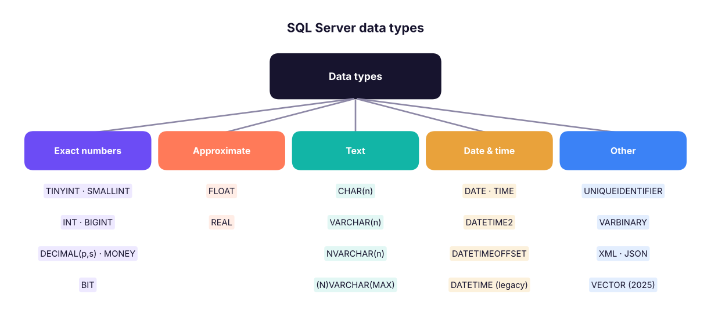
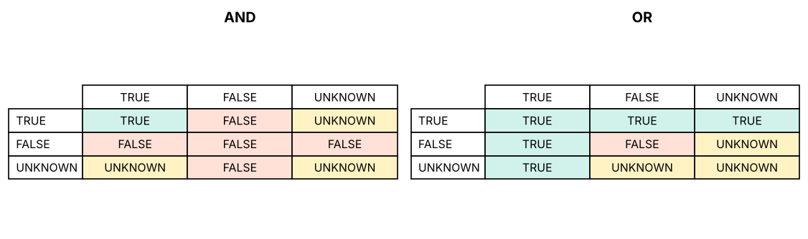

Data Types, Operators, NULLs, Variables & Comments
Choose the right SQL Server data type for every column, use arithmetic, comparison, logical and string operators correctly, understand NULL and three-valued logic, declare variables, follow naming rules and write readable, commented SQL.
● SQL class 2✦ SQL Server 2022, 2026Beginner⏱ 100 min
Every column has exactly one data type. The type decides what values are allowed, how much storage they use, how they sort and compare, and which functions work on them. A column of dates stored as text sorts "01-02-2026" before "31-01-2025" and cannot be used for date arithmetic, the same problem you met in Excel.
SQL Server data types

The main families of SQL Server data types.
Numbers
Type
Range / precision
Storage
Use for
TINYINT
0 to 255
1 byte
Ratings, small codes
SMALLINT
−32,768 to 32,767
2 bytes
Small counts
INT
about ±2.1 billion
4 bytes
IDs, quantities (default choice)
BIGINT
about ±9.2 × 10¹⁸
8 bytes
Very large IDs, event logs
DECIMAL(p, s) / NUMERIC
exact, p digits with s after the point
5–17 bytes
Money, rates: DECIMAL(12,2) holds up to 9,999,999,999.99
MONEY
exact, 4 decimals
8 bytes
Currency (DECIMAL is more portable)
FLOAT, REAL
approximate binary floating point
8 / 4 bytes
Scientific measurements, ML scores
BIT
0, 1 or NULL
1 bit
Yes/No flags
Watch outNever store money in FLOAT
FLOAT cannot represent many decimal fractions exactly (0.1 + 0.2 is not exactly 0.3), so totals drift by tiny amounts. Use DECIMAL(p, s) for currency.
Text
Type
Description
Example
CHAR(n)
Fixed length, padded with spaces
CHAR(2) for state codes MH
VARCHAR(n)
Variable length, up to n bytes (n ≤ 8000)
VARCHAR(100) for names in English
NVARCHAR(n)
Variable length Unicode (Hindi, Tamil, emoji)
NVARCHAR(100) for names in any language
VARCHAR(MAX), NVARCHAR(MAX)
Up to 2 GB
Long descriptions, JSON
Prefix Unicode string literals with N: N'नमस्ते'. Without N, non-Latin characters can turn into ?.
Dates and times
Type
Stores
Example
DATE
Date only
2026-04-27
TIME
Time only
14:30:00
DATETIME2(p)
Date + time, precise (preferred)
2026-04-27 14:30:15.1234567
DATETIME
Older date + time (3.33 ms precision)
Legacy tables
DATETIMEOFFSET
Date + time + time zone
2026-04-27 14:30 +05:30
SMALLDATETIME
Date + time to the minute
Low-precision logs
Always write date literals in the unambiguous ISO format'YYYY-MM-DD' ('2026-04-27'). '04/05/2026' means April 5 or May 4 depending on the server's language settings.
Others
UNIQUEIDENTIFIER (GUIDs), VARBINARY (files, images), XML, JSON stored in NVARCHAR(MAX) with JSON functions, GEOGRAPHY (maps), and from SQL Server 2025 a native VECTOR type for AI embeddings.
Choosing types for the retail tables
Column
Good type
Why
customer_id
VARCHAR(10)
Codes like C0001 keep leading letters/zeros
customer_name
NVARCHAR(100)
Names in any language
order_date
DATE
No time needed
quantity
INT (or SMALLINT)
Whole numbers
discount
DECIMAL(4,2)
0.00 to 0.99 exactly
sales, profit
DECIMAL(12,2)
Money
is_returned
BIT
Yes/No
Here are the types DuckDB inferred when loading the CSV (SSMS's Import Flat File wizard does the same kind of guessing; always review its suggestions):
Output
column_name
column_type
0
row_id
BIGINT
1
order_id
VARCHAR
2
order_date
DATE
3
ship_date
DATE
4
ship_mode
VARCHAR
5
customer_id
VARCHAR
6
customer_name
VARCHAR
7
segment
VARCHAR
8
city
VARCHAR
9
state
VARCHAR
10
region
VARCHAR
11
product_id
VARCHAR
19 rows × 2 columns (first 12 shown)
Operators
Arithmetic
Operator
Meaning
Example
Result in SQL Server
+
Add
SELECT 7 + 2
9
-
Subtract
SELECT 7 - 2
5
*
Multiply
SELECT 7 * 2
14
/
Divide
SELECT 7 / 2
3 (integer ÷ integer = integer)
/
Divide
SELECT 7 / 2.0
3.500000
%
Modulo (remainder)
SELECT 7 % 2
1
Common mistakesInteger division
In SQL Server, dividing two integers drops the decimals: SELECT 1/3 returns 0, and COUNT(...)/COUNT(...) returns 0 or 1 instead of a percentage. Multiply by 1.0 or CAST one side: SELECT 100.0 * returned / total or CAST(returned AS DECIMAL(10,2)) / total. (PostgreSQL behaves the same way; MySQL and DuckDB return decimals.)
Calculated columns are written right in the SELECT list. Here is unit price and margin for a few order lines:
SQL
SELECTTOP6
order_id,
quantity,
sales,
profit,
ROUND(sales / quantity, 2) AS unit_price,
ROUND(100.0 * profit / sales, 1) AS margin_pct
FROM superstore
ORDERBY row_id;
Result
order_id
quantity
sales
profit
unit_price
margin_pct
IN-2023-00001
2
36,000
3,472.55
18,000
9.6
IN-2023-00001
1
3,850
1,169.54
3,850
30.4
IN-2023-00001
4
62,080
6,044.47
15,520
9.7
IN-2023-00002
2
5,216
450.16
2,608
8.6
IN-2023-00003
3
24,591
-5,512.33
8,197
-22.4
IN-2023-00003
1
8,288
-1,598.43
8,288
-19.3
6 rows × 6 columns
Comparison
Operator
Meaning
=
Equal
<> or !=
Not equal
><>=<=
Greater / less (than or equal)
BETWEEN a AND b
Inclusive range
IN (…)
Matches any value in a list
LIKE
Pattern match with % and _
IS NULL / IS NOT NULL
Tests for missing values
Logical
AND (both true), OR (at least one true), NOT (reverses). Precedence: NOT first, then AND, then OR. Use brackets to make intent obvious.
SQL
-- Without brackets, AND is evaluated first:SELECTCOUNT(*) AS rows_without_brackets
FROM superstore
WHERE region = 'North'OR region = 'South'AND category = 'Technology';
Result
rows_without_brackets
2025
1 rows × 1 columns
SQL
-- With brackets: (North or South) and TechnologySELECTCOUNT(*) AS rows_with_brackets
FROM superstore
WHERE (region = 'North'OR region = 'South') AND category = 'Technology';
Result
rows_with_brackets
952
1 rows × 1 columns
The first query returns all North rows plus South Technology rows: probably not what was meant. Brackets fix it.
String concatenation
Method
Example
NULL behaviour
+
first_name + ' ' + last_name
Any NULL makes the whole result NULL
CONCAT()
CONCAT(first_name, ' ', last_name)
Treats NULL as empty text
CONCAT_WS()
CONCAT_WS(', ', city, state, 'India')
Separator; skips NULLs
SQL
SELECTTOP4 customer_name,
CONCAT(city, ', ', state) AS city_state,
CONCAT_WS(' | ', segment, region) AS segment_region
FROM customers;
Result
customer_name
city_state
segment_region
Saanvi Khan
Chandigarh, Punjab
Corporate | North
Meera Bose
Delhi, Delhi
Corporate | North
Riya Shah
Kolkata, West Bengal
Consumer | East
Diya Fernandes
Indore, Madhya Pradesh
Corporate | West
4 rows × 3 columns
NULL: the missing value
NULL means unknown or missing. It is not zero and not an empty string. Any comparison with NULL returns UNKNOWN, not TRUE or FALSE. SQL uses three-valued logic:
Expression
Result
NULL = NULL
UNKNOWN
NULL <> 5
UNKNOWN
5 + NULL
NULL
TRUE AND UNKNOWN
UNKNOWN
FALSE AND UNKNOWN
FALSE
TRUE OR UNKNOWN
TRUE
NOT UNKNOWN
UNKNOWN

Three-valued logic. Any comparison involving NULL is UNKNOWN; WHERE keeps only TRUE rows.
WHERE keeps only rows where the condition is TRUE, so rows where it is UNKNOWN disappear silently. That is why you must test with IS NULL:
SQL
WITH t AS (
SELECT'A'AS item, 10AS score UNIONALLSELECT'B', NULLUNIONALLSELECT'C', 30
)
SELECT
(SELECTCOUNT(*) FROM t WHERE score = NULL) AS equals_null_rows, -- always 0!
(SELECTCOUNT(*) FROM t WHERE score ISNULL) AS is_null_rows,
(SELECTCOUNT(score) FROM t) AS count_score, -- ignores NULL
(SELECTCOUNT(*) FROM t) AS count_star,
(SELECTAVG(score * 1.0) FROM t) AS avg_ignores_null, -- (10+30)/2
(SELECTAVG(COALESCE(score, 0) * 1.0) FROM t) AS avg_null_as_zero; -- (10+0+30)/3
Result
equals_null_rows
is_null_rows
count_score
count_star
avg_ignores_null
avg_null_as_zero
0
1
2
3
20
13.33
1 rows × 6 columns
Function
What it does
ISNULL(x, y)
T-SQL: return y when x is NULL
COALESCE(x, y, z, …)
ANSI: the first non-NULL value; works in every database
NULLIF(a, b)
NULL if a = b, otherwise a. Classic use: sales / NULLIF(qty, 0) avoids divide-by-zero errors
Variables in T-SQL
T-SQL lets you store a value in a variable for the length of a batch. Variable names start with @.
SQL
DECLARE @target_region VARCHAR(20) = 'West'; -- declare and assignDECLARE @min_sales DECIMAL(12,2);
SET @min_sales = 50000; -- assign with SETSELECT order_id, city, sales
FROM superstore
WHERE region = @target_region AND sales >= @min_sales;
DECLARE @total DECIMAL(14,2);
SELECT @total = SUM(sales) FROM superstore; -- assign from a queryPRINTCONCAT('Total sales: ', @total); -- message in the Messages tab
Variables make scripts reusable (change 'West' once) and are the basis of stored procedures (Lesson 13). Other databases use different syntax (PostgreSQL DO blocks or \set in psql).
Identifiers: naming rules and conventions
Rules (SQL Server):
- Start with a letter, _, @ (variables) or # (temporary tables).
- Up to 128 characters; letters, digits, _, @, $, #.
- Reserved words (ORDER, GROUP, USER) and names with spaces must be wrapped in [square brackets] (or "double quotes"): [Order Details], [order].
Conventions used in this handbook (pick one style and be consistent):
- snake_case, lowercase table and column names: order_items, customer_id.
- Plural table names (customers) or singular (customer): be consistent.
- Primary key id or <table>_id; foreign keys named after the referenced key (customer_id).
- Prefix views vw_, procedures usp_, indexes ix_.
- Avoid spaces, special characters and reserved words, so you never need brackets.
Comments and formatting
SQL
-- A single-line comment: everything after -- is ignored/* A multi-line comment:
Purpose : Top 10 customers by 2025 sales
Author : Varun Kumar
Updated : 27-Apr-2026 */SELECTTOP10
customer_id,
SUM(sales) AS total_sales -- revenue in rupeesFROM superstore
WHERE order_date >= '2025-01-01'AND order_date < '2026-01-01'-- half-open range: safe with timesGROUPBY customer_id
ORDERBY total_sales DESC;
TipReadable SQL checklist
One clause per line (SELECT, FROM, WHERE…), one column per line in long queries, consistent indentation, keywords in capitals, meaningful aliases, and a header comment explaining the purpose. Tools such as the "Format SQL" extension or SQLFluff format code automatically.
Summary
Key takeaways
Choose types deliberately: INT for IDs and counts, DECIMAL(p,s) for money, NVARCHAR for names, DATE/DATETIME2 for dates; never FLOAT for money.
Write dates as 'YYYY-MM-DD'.
7/2 = 3 in SQL Server: use 1.0 * or CAST for decimal division; % gives the remainder.
Precedence: NOT, AND, OR; use brackets.
NULL is unknown: compare with IS NULL; aggregates ignore NULLs; COALESCE, ISNULL and NULLIF handle them.
CONCAT treats NULL as empty; + with a NULL returns NULL.
Variables: DECLARE @x type = value; name things consistently and comment your code.
Quick quiz6 questions · tap an answer to check it
1. Which data type should store a product price in rupees and paise?
Answer: C. DECIMAL stores exact decimal values, which money needs.
2. In SQL Server, what does SELECT 9 / 4 return?
Answer: A. Integer divided by integer gives an integer (the fraction is dropped).
3. What does WHERE discount = NULL return?
Answer: B. Comparisons with NULL are UNKNOWN, so WHERE keeps nothing. Use IS NULL.
4. Which expression returns 'Pune' when city is NULL?
Answer: B. COALESCE returns the first non-NULL value.
5.WHERE a = 1 OR b = 2 AND c = 3 is evaluated as:
Answer: B. AND has higher precedence than OR.
6. Why use NVARCHAR instead of VARCHAR for customer names?
Answer: B. NVARCHAR stores Unicode text; VARCHAR may lose characters outside the code page.
ExerciseFix the query
A colleague wrote: SELECT order_id, profit/sales*100 AS margin FROM superstore WHERE category = 'Furniture' OR category = 'Technology' AND discount > 0.2 AND ship_mode = NULL; List every problem and rewrite it.
Show solution
AND binds before OR, so the discount and ship-mode filters apply only to Technology: add brackets.
ship_mode = NULL never matches: use IS NULL (or remove it if not needed).
If profit and sales were integers, profit/sales would be integer division; use 100.0 * profit / sales and guard against zero with NULLIF(sales, 0).
Rewritten:
SELECT order_id, ROUND(100.0 * profit / NULLIF(sales, 0), 1) AS margin_pct FROM superstore WHERE category IN ('Furniture', 'Technology') AND discount > 0.2;
Interview cornerQuestions you may be asked
Q: What is the difference between CHAR, VARCHAR and NVARCHAR?
CHAR is fixed length (padded), VARCHAR is variable length non-Unicode, NVARCHAR is variable length Unicode (two bytes per character for most scripts).
Q: How does SQL treat NULL?
As unknown: comparisons return UNKNOWN, aggregates (except COUNT(*)) ignore NULLs, arithmetic with NULL returns NULL. Use IS NULL, COALESCE/ISNULL and NULLIF.
Q: Why does SELECT 100 * returned / total give 0?
Integer division when both values are integers; cast to decimal or multiply by 100.0.
Q: DECIMAL vs FLOAT?
DECIMAL is exact (money, rates); FLOAT is approximate binary (scientific values) and can introduce rounding errors.
Practise more online
Free, trusted places to test yourself on this topic. Links open the original site in a new tab.